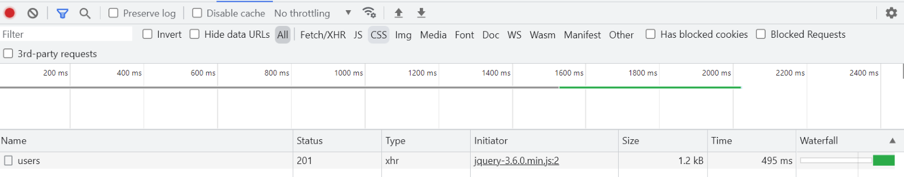

Prototype
Prototype
Detailed Work on the Back-End
In the backend a plethora of different tools and services are leveraged in order to produce the results which we require. These tools are as far ranging, as python, till even the Google Maps API, and they all play an integral part, in making the application functional and allowing it to operate as it should.
Selenium
In order to implement the web scraping functionality of the application, a code was created, which scrapes the websites of the stores, with which the application cooperates, and from these websites, retrieve both the price and title of all their products, which are in stock. In order to implement the web scraper, we used Selenium, as well as the time module in python, so as to give the website enough time to send us the data, before proceeding with the next request.
(Beginning of the IGA web scraper)
(Beginning of the Foodland web scraper)
(Beginning of the Woolworths web scraper)
Once they are run, over the period of a few hours, they will collect all the relevant data, from the websites of these stores. This information will then be stored in files iga.txt, foodland.txt and woolworths.txt respectively, in a manner, as shown below:
(IGA web scraper results)
(Foodland web scraper results)
(Woolworths web scraper results)
Auto HTML Generators
The information retrieved through use of the web scrapers, is then utilized by the auto HTML generators, which automatically generate the HTML, for the website.
(Beginning of the code for the auto HTML genenator for Foodland)
(Result of the auto HTML generator for Foodland)
(Beginning of the code for the auto HTML generator of IGA)
(Result of the auto HTML generator for IGA)
(Beginning of the code for the auto HTML generator of Shop local)
(Result of the auto HTML generator for Shop local)
(Beginning of the code for auto HTML generator of Woolworths)
(Result of the auto HTML generator for Woolworths)
The auto HTML generators for the products of each store are very similar to that of the pages.
Directions
In order to ensure that the user completes his shopping in the smallest amount of time possible, the application also has the integrated functionality, of providing him with instructions, so as to complete his errands in an expediated fashion. To this purpose, a python program was written, so as to make HTTP requests to the google API, which would in turn, respond with a JSON containing all the relevant information.
(The entire dir.py program)
Backend
Once all the programs above were completed, we continued to develop backend.py, a program which encompasses most of the functionalities the application should have. By having such a program, we have a functioning back end that we can potentially connect with the front end and we also allow the user, if he wants to, to operate the application from the command line. The backend leverages the dir.py program as well as datetime, which I use so as to archive the user’s purchases.
(This is the beginning of the backend program)
Once it is run, it will ask the user to select an option, and he has to respond with p, s, h or e, so as to purchase products, search for an item, view purchase history or exit the application respectively.
If the user selects to purchase products, then, the program will ask him to input the products name.
The user has to then input its name, to which the program will respond with all products that have that name included in them.
The user now has to select which number product it is that he wants to purchase, and then the program will ask him if he wants to purchase more products. If he does, he has to respond with y, in which case the process will be repeated and otherwise he has to respond with n, in which case it will continue with the directions.
If he responds with neither y nor n, then it will ask him to input either y or n.
The program will hence ask the user, after he has provided a valid input, for his latitude and longitude. Once he has provided these values, it will provide him with the relevant directions, so as to make his purchases, in the most expediated manner possible. These directions will be provided with HTML formatting, so that they can easily be embedded in a website.
If he gives an invalid response to the question, then it will ask him to please input a decimal number.
After this, it will provide him with the menu of options again. If the user selects to search for an item, the program will ask him to input the item’s full name.
Once the user has responded with an input, the program will output the options which match the search.
And then ask if the user wishes to search for more products. If he does and hence answer with y, then it will repeat the process. Otherwise, if he doesn’t and hence responds with n, it will provide the user with the options menu.

If the user’s response is neither y nor n, then it will ask the user to input either y or n.
If the user now wishes to view his purchase history, then the program will provide him with it, complete with both the exact time and date, on which he made each purchase.
If he chooses to exit, then the program will tell him goodbye:). Otherwise, if he gives an invalid input the menu, it will ask him to please input the character p, s, h or e, whilst presenting him with the options again.
Registration Form Example and Fake Back-end
The above picture is an example of our registration form for onboarding users.
The above picture is an example of POSTING form data to a HTTP end point. If this was a real back-end it would be part of a back-end API which would send form data to a database to store in a table and then return the ID of the new user record.
In a real back-end the ID would be used to immediately redirect the user to their new profile page.
Status 201 in the picture above indicates a success and if we were to see Status 400 or Status 500 this would indicate an error has occurred.
Budget Hub UI Plan
Full board view available via this link: Link to Board